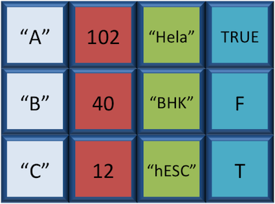

# Create a numeric vector and store the vector as a variable called 'glengths'
glengths <- c(4.6, 3000, 50000)
glengths[1] 4.6 3000.0 50000.0Variables can contain values of specific types within R. The six data types that R uses include:
"numeric" for any numerical value, including whole numbers and decimals. This is the most common data type for performing mathematical operations."character" for text values, denoted by using quotes (““) around value. For instance, while 5 is a numeric value, if you were to put quotation marks around it, it would turn into a character value, and you could no longer use it for mathematical operations. Single or double quotes both work, as long as the same type is used at the beginning and end of the character value."integer" for whole numbers (e.g., 2L, the L indicates to R that it’s an integer). It behaves similar to the numeric data type for most tasks or functions; however, it takes up less storage space than numeric data, so often tools will output integers if the data is known to be comprised of whole numbers. Just know that integers behave similarly to numeric values. If you wanted to create your own, you could do so by providing the whole number, followed by an upper-case L."logical" for TRUE and FALSE (the Boolean data type). The logical data type can be specified using four values, TRUE in all capital letters, FALSE in all capital letters, a single capital T or a single capital F."complex" to represent complex numbers with real and imaginary parts (e.g., 1+4i) and that’s all we’re going to say about them"raw" that we won’t discuss furtherThe table below provides examples of each of the commonly used data types:
| Data Type | Examples |
|---|---|
| Numeric: | 1, 1.5, 20, pi |
| Character: | “anytext”, “5”, “TRUE” |
| Integer: | 2L, 500L, -17L |
| Logical: | TRUE, FALSE, T, F |
The type of data will determine what you can do with it. For example, if you want to perform mathematical operations, then your data type cannot be character or logical. Whereas if you want to search for a word or pattern in your data, then you data should be of the character data type. The task or function being performed on the data will determine what type of data can be used.
We know that variables are like buckets, and so far we have seen that bucket filled with a single value. Even when number was created, the result of the mathematical operation was a single value. Variables can store more than just a single value, they can store a multitude of different data structures. These include, but are not limited to, vectors (c), factors (factor), matrices (matrix), data frames (data.frame) and lists (list).
A vector is the most common and basic data structure in R, and is pretty much the workhorse of R. It’s basically just a collection of values, mainly either numbers,

or characters,

or logical values,

Note that all values in a vector must be of the same data type. If you try to create a vector with more than a single data type, R will try to coerce it into a single data type.
For example, if you were to try to create the following vector:

R will coerce it into:

The analogy for a vector is that your bucket now has different compartments; these compartments in a vector are called elements.
Each element contains a single value, and there is no limit to how many elements you can have. A vector is assigned to a single variable, because regardless of how many elements it contains, in the end it is still a single entity (bucket).
Let’s create a vector of genome lengths and assign it to a variable called glengths.
Each element of this vector contains a single numeric value, and three values will be combined together into a vector using c() (the combine function). All of the values are put within the parentheses and separated with a comma.
# Create a numeric vector and store the vector as a variable called 'glengths'
glengths <- c(4.6, 3000, 50000)
glengths[1] 4.6 3000.0 50000.0Note your environment shows the glengths variable is numeric (num) and tells you the glengths vector starts at element 1 and ends at element 3 (i.e. your vector contains 3 values) as denoted by the [1:3].
A vector can also contain characters. Create another vector called species with three elements, where each element corresponds with the genome sizes vector (in Mb).
# Create a character vector and store the vector as a variable called 'species'
species <- c("ecoli", "human", "corn")
species[1] "ecoli" "human" "corn" What do you think would happen if we forgot to put quotations around one of the values? Let’s test it out with corn.
# Forget to put quotes around corn
species <- c("ecoli", "human", corn)Note that RStudio is quite helpful in color-coding the various data types. We can see that our numeric values are blue, the character values are green, and if we forget to surround corn with quotes, it’s black. What does this mean? Let’s try to run this code.
When we try to run this code we get an error specifying that object ‘corn’ is not found. What this means is that R is looking for an object or variable in my Environment called ‘corn’, and when it doesn’t find it, it returns an error. If we had a character vector called ‘corn’ in our Environment, then it would combine the contents of the ‘corn’ vector with the values “ecoli” and “human”.
Since we only want to add the value “corn” to our vector, we need to re-run the code with the quotation marks surrounding corn. A quick way to add quotes to both ends of a word in RStudio is to highlight the word, then press the quote key.
# Create a character vector and store the vector as a variable called 'species'
species <- c("ecoli", "human", "corn")Exercise
Try to create a vector of numeric and character values by combining the two vectors that we just created (glengths and species). Assign this combined vector to a new variable called combined. Hint: you will need to use the combine c() function to do this. Print the combined vector in the console, what looks different compared to the original vectors?
A factor is a special type of vector that is used to store categorical data. Each unique category is referred to as a factor level (i.e. category = level). Factors are built on top of integer vectors such that each factor level is assigned an integer value, creating value-label pairs.
For instance, if we have four animals and the first animal is female, the second and third are male, and the fourth is female, we could create a factor that appears like a vector, but has integer values stored under-the-hood. The integer value assigned is a one for females and a two for males. The numbers are assigned in alphabetical order, so because the f- in females comes before the m- in males in the alphabet, females get assigned a one and males a two. In later lessons we will show you how you could change these assignments.

Let’s create a factor vector and explore a bit more. We’ll start by creating a character vector describing three different levels of expression. Perhaps the first value represents expression in mouse1, the second value represents expression in mouse2, and so on and so forth:
# Create a character vector and store the vector as a variable called 'expression'
expression <- c("low", "high", "medium", "high", "low", "medium", "high")Now we can convert this character vector into a factor using the factor() function:
# Turn 'expression' vector into a factor
expression <- factor(expression)So, what exactly happened when we applied the factor() function?

The expression vector is categorical, in that all the values in the vector belong to a set of categories; in this case, the categories are low, medium, and high. By turning the expression vector into a factor, the categories are assigned integers alphabetically, with high=1, low=2, medium=3. This in effect assigns the different factor levels. You can view the newly created factor variable and the levels in the Environment window.

So now that we have an idea of what factors are, when would you ever want to use them?
Factors are extremely valuable for many operations often performed in R. For instance, factors can give order to values with no intrinsic order. In the previous ‘expression’ vector, if I wanted the low category to be less than the medium category, then we could do this using factors. Also, factors are necessary for many statistical methods. For example, descriptive statistics can be obtained for character vectors if you have the categorical information stored as a factor. Also, if you want to denote which category is your base level for a statistical comparison, then you would need to have your category variable stored as a factor with the base level assigned to 1. Anytime that it is helpful to have the categories thought of as groups in an analysis, the factor function makes this possible. For instance, if you want to color your plots by treatment type, then you would need the treatment variable to be a factor.
Exercises
Let’s say that in our experimental analyses, we are working with three different sets of cells: normal, cells knocked out for geneA (a very exciting gene), and cells overexpressing geneA. We have three replicates for each celltype.
Create a vector named samplegroup with nine elements: 3 control (“CTL”) values, 3 knock-out (“KO”) values, and 3 over-expressing (“OE”) values.
Turn samplegroup into a factor data structure.
A matrix in R is a collection of vectors of same length and identical datatype. Vectors can be combined as columns in the matrix or by row, to create a 2-dimensional structure.

Matrices are used commonly as part of the mathematical machinery of statistics. They are usually of numeric datatype and used in computational algorithms to serve as a checkpoint. For example, if input data is not of identical data type (numeric, character, etc.), the matrix() function will throw an error and stop any downstream code execution.
A data.frame is the de facto data structure for most tabular data and what we use for statistics and plotting. A data.frame is similar to a matrix in that it’s a collection of vectors of the same length and each vector represents a column. However, in a dataframe each vector can be of a different data type (e.g., characters, integers, factors). In the data frame pictured below, the first column is character, the second column is numeric, the third is character, and the fourth is logical.

A data frame is the most common way of storing data in R, and if used systematically makes data analysis easier.
We can create a dataframe by bringing vectors together to form the columns. We do this using the data.frame() function, and giving the function the different vectors we would like to bind together. This function will only work for vectors of the same length.
# Create a data frame and store it as a variable called 'df'
df <- data.frame(species, glengths)We can see that a new variable called df has been created in our Environment within a new section called Data. In the Environment, it specifies that df has 3 observations of 2 variables. What does that mean? In R, rows always come first, so it means that df has 3 rows and 2 columns. We can get additional information if we click on the blue circle with the white triangle in the middle next to df. It will display information about each of the columns in the data frame, giving information about what the data type is of each of the columns and the first few values of those columns.
Another handy feature in RStudio is that if we hover the cursor over the variable name in the Environment, df, it will turn into a pointing finger. If you click on df, it will open the data frame as it’s own tab next to the script editor. We can explore the table interactively within this window. To close, just click on the X on the tab.
As with any variable, we can print the values stored inside to the console if we type the variable’s name and run.
df species glengths
1 ecoli 4.6
2 human 3000.0
3 corn 50000.0Lists are a data structure in R that can be perhaps a bit daunting at first, but soon become amazingly useful. A list is a data structure that can hold any number of any types of other data structures.
If you have variables of different data structures you wish to combine, you can put all of those into one list object by using the list() function and placing all the items you wish to combine within parentheses:
list1 <- list(species, df, expression)We see list1 appear within the Data section of our environment as a list of 3 components or variables. If we click on the blue circle with a triangle in the middle, it’s not quite as interpretable as it was for data frames.
Essentially, each component is preceded by a colon. The first colon give the species vector, the second colon precedes the df data frame, with the dollar signs indicating the different columns, the last colon gives the single value, number.
If I click on list1, it opens a tab where you can explore the contents a bit more, but it’s still not super intuitive. The easiest way to view small lists is to print to the console.
Let’s type list1 and print to the console by running it.
list1[[1]]
[1] "ecoli" "human" "corn"
[[2]]
species glengths
1 ecoli 4.6
2 human 3000.0
3 corn 50000.0
[[3]]
[1] low high medium high low medium high
Levels: high low mediumThere are three components corresponding to the three different variables we passed in, and what you see is that structure of each is retained. Each component of a list is referenced based on the number position.
The materials in this lesson have been adapted from work created by the (HBC)](http://bioinformatics.sph.harvard.edu/) and Data Carpentry (http://datacarpentry.org/). These are open access materials distributed under the terms of the Creative Commons Attribution license (CC BY 4.0), which permits unrestricted use, distribution, and reproduction in any medium, provided the original author and source are credited.